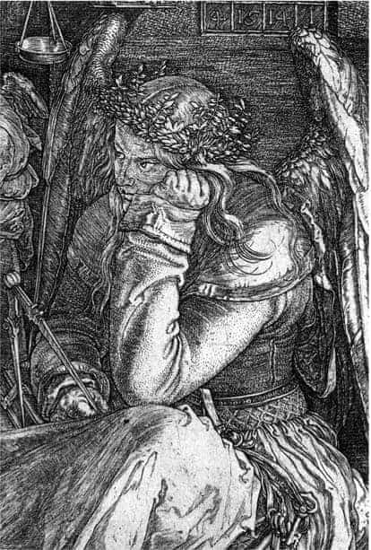

1.2. MELENCOLIA I’İN AÇILIMI
Albrecht Dürer’in, 43 yaşında, yaptığı Melencolia I gravürü (24 cm x 18,6 cm) en genel çizgileriyle belki şöyle açılabilir:3, 4
Gravür, melankolik bir kadın mizacının alegorik, sembolik anlatımıdır. Kadın kanatlı olarak betimlenmiştir. Melankolik kadın, mistik alacakaranlık bir zaman dilimi içinde, mimari tarzların hiçbirisi içine dahil edilemeyen, penceresi ve kapısı olmayan, kaba taştan örülmüş bir yapının merdivenlerine oturmuş olarak görülmektedir.
Yapının duvarında terazi, güneş ve kum saati, çan ve bir sayı dörtgeni vardır.
Bulunulan yerin coğrafyasını ve tarihsel dönemini kestirmek pek kolay değildir. Gezegen üzerinde çokça bulunan bir kıyı yerleşim yerinin yakınıdır. Belki küçük bir inşaat ya da yıkıntı alanı olabilir. Burası, herhangi bir yer, herhangi bir tarihsel dönem içindedir. Daha sonraki yüzyıllarda, melankoli üzerine yazı-şiir yazan dünyanın çeşitli uluslarından sanatkârlar burasını hep kendi kentleri olarak tanımlamışlardır.
Yapıtın gerçek ışık kaynağını bulmak pek mümkün değildir. Işık, gravür üzerine son kerte tutumlu bir biçimde dağıtılmıştır.
Melankolik kadının çevresinde anlamlı bir düzensizlik vardır.
Daha çok mimarların, marangozların yapı-inşaat işlerinde kullandıkları aletler ve geometri araçları yerlere dağılmıştır.
Yerde, kadının ayakları dibinde bir köpek uyumaktadır. Biraz daha ileride, bir değirmen taşının üzerinde –gene– kanatlı olarak betimlenmiş bir çocuk (Putto) oturmuştur. Yerde, ortada, merkezi konumda çok yüzlü bir taş blok (Polygen) ve bir küre görülür.
Duvara dayalı duran merdivende yedi basamak sayılabilmektedir. Merdivenin basamakları arasından –ileride– bir kıyı yerleşim yeri görülür.
Limanda yelkenli gemiler, kıyıda evler, kuleler vardır. Suyun yüzü durgundur.
Gökyüzünde, gökkuşağı ve bir komet (kuyrukluyıldız) görülmektedir. Ve bir yarasanın kanatları arasına gerilmiş panoda Melencolia I yazısı okunmaktadır.
Gravürün ışık kaynağı, olasılıkla bu kometten ya da görünmeyen bir ay ışığından gelmektedir.
Melankolik kadının bakımlı uzun saçları dağınıktır. Başı hafifçe sola doğru eğilmiştir. Başında bir çelenk vardır. Sol el yumruk yapılmış, destekler biçimde başa dayanmıştır. Kadının kucağında kapalı bir kitap vardır. Sağ eli bir pergel tutmaktadır.
Kadının bakışları ileride, ufukta bir noktada, olasılıkla boşlukta ya da Hiçlik’te odaklanmıştır.
Özetlemeye çalışırsak: Melencolia I gravüründe, birbirleriyle hiç ilgisi yokmuş gibi görülen pek çok şeyin, hiçbir harmoni oluşturma çabası ve kaygısı olmadan bir araya getirildiği, küçücük bir mekâna adeta tıkıldığı görülmektedir. Gravürde yer alan her bir şey, sanki terk edilmiş, birbirleriyle hiçbir ilişkileri yokmuş gibi durmaktadır. Salt melankolik kadın değil, örneğin yerdeki çekiç ve çiviler de yapayalnız ve ürpertici bir terk edilmişlik içinde sergilenmiştir.5
Dürer uzmanlarından Wölfflin, Melencolia I gravüründe, melankolik kadının durumunu Wolfgang Goethe’nin Faust yapıtındaki Doktor Faust’un içinde bulunduğu çaresizliğe benzetmiştir.6 Anımsarsak: Faust, bir gece yarısı, yazı masasının koltuğunda büyük bir huzursuzluk içinde kendi kendine konuşur: “Araştırdım, ah, ateşli çabalarla./Felsefe, hukuk ve tıp bilimini./Bir de, ne yazık ki, ilahiyatı./Şimdi de duruyorum burada, bir ahmak gibi./Hiçbir şekilde de akıllanmış değilim./Yüksek unvanım, doktoram bile var,/(...) Bir şey bilemiyeceğimizi, sonuçta anlamak için./Bir şeyler bildiğime kandıramıyorum kendimi./Dolayısıyla kendimi büyüye verdim şimdi./Ruhun gücü ve belagatı/bana bazı sırlar açıklasın diye...”7
Dürer’in gravürüne ne amaçla bakılırsa bakılsın, bunda saygın, bilmecemsi bir dağınıklık, garip bir karmaşa ve soylu bir düzen görülür. Gravürün küçük mekânı hem garip bir boşluk içinde, hem de tıka basa doludur. Gravürdeki nesnel-tinsel gizem ve psişik gerginlik daha da önemlisi, bir “moral kalite” hemen sezinlenir.8
Gravüre biraz daha yakından baktığımızda: Melankolik kadın, 1500’lü yılların modasına, çağının beğenisine uygun, pahalı, güzel, iyi dokunmuş kumaştan yapıldığı kanısı veren, görkemli ve ağır bir giysi içindedir.
Ancak oturduğu yer pek de rahat değildir. Arkada görülen yapının terasına ya da taş merdivenlerine oturmuş, daha doğrusu çökmüş gibi görünmektedir.
Ayrıca sırtındaki kanatlara karşın oturduğu yere yığılıp kalmış gibi görünmesi, konumunu daha da çelişkili hale getirmektedir.

Albrecht Dürer, Melencolia I, ayrıntı.
Sol kolunun dirseği, sol dizine dayanmış, eli hafif yumruk oluşturmuş; sol tarafa doğru eğilmiş başını desteklemektedir. Kadının sol tarafa doğru eğilmiş başı, ancak bu sol elin yardımıyla destekleniyor –gibi– görünmektedir.9
Melankolik insanlarda başın bu konumda tespiti kuşkusuz yeni bir şey değildir. Sıkıntılı, hüzünlü insanları tasvir eden hemen hemen tüm ortaçağ yapıtlarında, başın bir yana eğilmiş durumda betimlenmesi gelenekselleşmiştir. Bunun sayısız örnekleri vardır. Geleneksel inanca göre, yumruk yapılmış el, sorunu olan organı gösterir. Burada da kadının başını tutmakta, hatta onun desteksiz duramadığını göstermektedir... Kadın sağ eliyle, neredeyse “kullanılmamaktan eskimiş” büyükçe bir pergel tutmaktadır. Sağ kolu kucağından dışarı doğru kaymış, düşmek ve bir daha ilgilenilmemek ve yitip gitmek üzere olan, kapalı, kalın, güzel ciltli –belki de kutsal– bir kitaba dayalıdır.
İşlemeli bel kuşağına bağlı ve görkemli bol uzun elbisesinin kıvrımları arasından aşağıya doğru bir para kesesi ve bir anahtar destesi sarkmaktadır. Dürer’in Melencolia I yapıtında belki de en çok tartışılan noktalardan biri, bu para kesesi ve anahtar destesi olmuştur.10 Dürer’in, bu gravür ile ilgili yaptığı bir ön çalışmada, “anahtar şiddetin, para kesesi gücün sembolüdür,” diye yazması tartışmaları daha da artırmıştır.
Gerçekten de pek çok ortaçağ sanat yapıtında, para kesesi ve anahtar, yönetimi elinde tutanların gücünü, uyguladıkları şiddeti, egemenliği, varsıllığı simgelemek için kullanılmıştır. Fakat burada durum, belki de tam tersi bir vurguyu içermektedir. Melankolik kadın, gerçekte tüm dünyasal konumları yoksamakta; varsıllığa, şiddete, güce karşı ilgisiz kalmakta; hatta bunları yadsımaktadır. Melankolik kadının görünümünden varsıl bir konumda olduğu sezinlenir. Olasılıkla, toplumsal gücü ve parası vardır. Ancak o bunlarla ilgilenecek durumda değildir. Dahası, ilgilenmek istememektedir. Örneğin burada, diğer ortaçağ yapıtlarının çoğunda olduğu gibi, para kesesi ve anahtar destesi, bedene sıkıca asılı değildir. Tam tersine, bunlar melankolik kadının eteğinden yere, ayağının yanına kaymıştır. Ve kadın bunlarla hiç mi hiç ilgilenmemektedir. Para kesesi yerde, buna karşın kadının bakışları çok uzaklardadır. Burada bir şey açıkça görülebilir: Dürer’in gravüründeki melankolik kadın, dünyasal varsıllığa, güce, şiddete karşı ilgisizdir. Paranın, gücün, egemenliğin ötesinde –kendisi için– son kerte ciddi olan, başka şeyler düşünmektedir. Ama nedir bu düşündükleri? Bilemiyoruz...
Melankolik kadının sırtındaki kanatlar ile bedensel canlılığın (vitalitenin) azalmış konumu, ciddi bir çelişki görünümündedir. Burada bir tür ruhsal tükenmişlik ve bedensel sönmüşlük söz konusu edilebilir.
Kimi araştırmacılara göre, kanatlar gerçekte bedenden çok ruhla ilgilidir. Bunlar bedenin değil, ruhun kanatlarıdırlar. Kutsal kitaplarda, söylencelerde anlatılan ve ermişlerin, bilicilerin ruhlarını gökyüzüne uçuran kanatlar olabilir bunlar. Platon öğretisinin uzantısında, erdemli insanların ruhlarının bir an önce özkaynağa-idea’ya, gökyüzüne uçmasını sağlayacak sembollerdir kanatlar. Ve ortaçağ sanat geleneğinde bu amaçla sık kullanılmışlardır.
Dürer, burada belki de melankolik insanların da bu dünyada tutunamayıp bir an önce öte bir dünyaya gitmek isteyen, erdemli, hüzünlü, kuşkulu, bilge insanlar olduklarını vurgulamak istemektedir.
Kadının yüzü gölgelidir. Ancak bu gölgenin çevreden onun yüzüne yansıyan bir gölge olabileceği kanısına kapılıyor insan. Gerçekte kadının yüzü, melankoliklere özgü, üzüntüden kararmış (faciel nigra) konumunda değildir. Yüz ifadesinde üzüntüden çok gergin bir öfke sezinlenmektedir. Melankolik kadının konumunda yalnızlıktan çok terk edilmişlik, korkudan çok kuşku görülmektedir.11
Melankolik kadın uyanıktır. Yüz ifadesine göre, yorgun ve uykulu bir durum söz konusu değildir. Arka plandaki yarasanın haykıran durumuna, kometin dünyaya çarpacakmış gibi görünmesine, çevrenin, alacakaranlığın gölgelemesine karşın, kadının gözlerinde ve de özellikle gözbebeklerinde şaşırtıcı bir parlaklık görülmektedir. Melankolik kadının tüm bedensel çökmüşlüğüne, çevresinin dağınıklığına karşın, gözlerindeki bu açık, canlı, ışıklı ve hatta enerjik bakışlar, yaşanan çelişkili durumu daha da vurgulamakta; trajedinin boyutları üzerine kimi ipuçları vermektedir. Tüm yapıt ile gözler ve gözbebekleri arasında temel bir çelişki vardır. Belki de antikçağdan beri, 2500 yıldır tartışılan melankoli tarzı yaşamın gizi tam da bu temel çelişkide düğümlenmektedir.
Koyu siyah, bakımlı ama dağınık saçlar. Dış dünyadan gelen alacakaranlığın gölgelediği yüz... Öte yandan, beyaz gözyuvarlarının ve siyah gözbebeklerinin üzerine dışardan, bilinmeyen bir ışık kaynağından ya da içsel bir kaynaktan gelen gizemli bir beyaz ışık. antikçağdan beri “ruhun penceresi” olarak tanımlanan gözlere çok daha derin bir anlam yüklemektedir. Gözlerin gözbebekleri bu denli canlı, parlak bir kişiliğin çok şeyler duyumsadığını, çok şeyler düşündüğünü kestirmek zor olmasa gerekir.12
Ayrıca kadının bakışları çevresiyle de ilgili değildir. İleriye, boşluğa yönelik. Belki de gerçekte kadının bakışları, dışarıya, boşluğa değil de tümüyle kendi içine, özbenliğine yönelmiştir. Bilemiyoruz.
Belki bir şeyi daha kestirmek (daha doğrusu kestirememek) olası: Melankolik kadının iç dünyası ve düşüncesiyle, dış dünyanın yaşam tarzı ve zamanın akış hızı aynı değildir. Kadın kendi içinde, dış dünyadan farklı bir yaşam tarzı, bir zaman boyutunu yaşıyor gibi görünmektedir. Kadın olasılıkla kıyı yerleşim yerindeki toplumun günlük, doğal, geleneksel hayatının berlirlediği –doğaçlama– dünyadan çok farklı bir “organik zaman” içindedir...
Melankolik kadının başında taze düğünçiçeği ve suteresi bitkilerinin yapraklarından oluşmuş bir çelenk vardır. Bilindiği kadarıyla bu tür çelenkler erdemli insanların, kahramanların, bilgelerin başlarına konur. Ayrıca insanları hastalıklardan korumak ya da var olan hastalığı tedavi etmek amacıyla da kullanılır. 16. yüzyılda, melankoliklere ilaç olarak, bu otları alınlarına ince bir bezle bağlamaları özellikle salık verilmiştir. Burada, çelenk iki ayrı bitkiden yapılmış. Bunun rastlantı ya da estetik görünüm kaygısıyla olmadığı sanılıyor. Dürer, daha çocukluk yaşlarından beri pek çok tanıdığının kitaplarına bitki desenleri çizmiş; bunların insan sağlığına olan etkilerini çok yakından öğrenmiştir. Burada, özellikle düğünçiçeği (Ranunculus aquaticus) ile suteresi (Nasturtium officinale) bitkilerini çizmesinde bu konuda daha başka bilgileri olduğu düşünülmekte; bilinçli bir sembol arayışının söz konusu olabileceğine inanılmaktadır.13 Çelenk yapılan bitkilerin yeşil ve sulu yapraklı olmaları ile antikçağdan beri kuru-soğuk mizaçlı oldukları söylenen melankolikler arasındaki çelişki yeniden tartışılmak istenmektedir belki. Dürer’e göre, belki de melankoliklerin mizaçları hiç de öyle sanıldığı gibi kuru ve soğuk değildir. Ya da sulu ve yeşil yapraklı bitkilerden yapılan çelenk, melankoliklerin kafalarındaki yaratıcı düşüncenin canlılığını sembolize etmektedir.
Gravüre ışığın nereden geldiğini kestirmek kolay değildir. Dahası, olayın günün hangi saatinde geçtiğini bilmek de oldukça zor. Ne gece ne gündüz. Gün batımı, alacakaranlık, ara bir zaman. Gün tümüyle bitmemiş; gece tam gelmemiştir.
Gravüre ışık belki görünmeyen bir Ay’dan ama olasılıkla arka plandaki kometten gelmektedir. Ayrıca durgun suyun yüzeyi, ortadaki çok yüzlü taş blok ve hatta kürenin bir yüzü de ışık kaynağı gibi işlev görmektedirler. Belki, günün arta kalan ışıkları da bunlara eklenmektedir. Kesin belirgin bir ışık kaynağı görülmemektedir. Bu koşullarda gravür, siyahtan çok koyu gri rengin etkisinde kalmaktadır.
Ruhbilimleri açısından, siyah, insanlığın ilk günlerinden beri ağır bir hüznün, matemin ve ölümün rengidir. Bu yanıyla siyah rengin tavrı ve görünümü açık ve nettir. Buna karşın gri –özellik de, koyu gri– yaygın ve yoğun bir belirsizliği, heyecansızlığı, her türlü tinsel/ruhsal eğilimden yoksunluğu simgeler. Gri, ne renklidir ne de renksiz. Gri, kanı-kurumuş, fantasmagorik, belirsiz gölgeli bir bölgenin rengidir. Gri, nesne-özne, dışsal-içsel eğilimlerden tümüyle yansızdır. Ne ruhsal bir gerilimi belirler, ne de gevşekliği. Canlı yaşamın olmadığı bir bölgenin rengidir.14
Gravürün bu tür bir gri rengin etkisi altında olması, anlatılmak istenen yaşam tarzının ciddiyetini daha da belirginleştirmektedir.
Yapıtta ikinci canlı varlık, köpektir. Köpek, en eski söylencelerden, masallardan beri, bilgelerin, ermişlerin geleneksel yardımcısı, arkadaşı, can yoldaşıdır.
Dürer’in gravüründe de melankolik kadına köpek yoldaşlık etmektedir.
Burada, köpeğin belki biraz zayıflamış, belki biraz bakımsız olduğu söylenmiştir... Ama köpek dingin görünmektedir. Kendi varlığı içine kıvrılmış yatmaktadır. Gözleri kapalı gibi. Uyuyup uyumadığı kesin belli değildir... Büyük bir olasılıkla, gözleriyle olmasa bile diğer duyularıyla melankolik kadını izlemektedir.
Dürer’in simgesel dünyasının oluşmasında Herapollon Hiyeroglif yazısının etkisi olduğu sıklıkla söylenmektedir.
Bu ilginç, gizemli hiyeroglif, Antikçağ Grek ve Eski Mısır biliminin ortak bir ürünü olarak Romalıların Mısır’ı işgal etmeleriyle güncelleşmiştir. Herapollon Hiyeroglif’i, Mısır Hiyeroglif yazısındaki şekillerin, simgelerin anlamsal yorumlarının Antik Grek dilinde yazılmasıyla ortaya çıkmıştır.15
Bu anlam-yorum yazı, 15. yüzyılda Bizans’tan İtalya’ya gelmiştir. İtalyan hümanistleri, zamanın gizemli yaşamı içinde, bu yorum-simge yazısına çok önem vermişlerdir. Herapollon Hiyeroglif yazısından bir tür bulmaca-dili ortaya çıkarmışlardır.16
Dürer, bu bulmaca-diline, anlam-yorum yazısına yabancı değildir. Onun bu gizemli yazıyı –olasılıkla– arkadaşı Konrad Celtis’ten öğrendiği sanılmaktadır. Herapollon Hiyeroglif şekillerin anlamlarının yorumu, bu yorumu yapan insanın bilgelik, ermişlik düzeyine bırakılan bir özgürlük içermektedir.17
Her ermişin, kendi yorumunu yapması ve kendi hakikatine yaklaşması olası kılınmıştır. Yanlış ya da eksik/fazla yorum, ermişin/bilgenin kendi özgürlük sorunu olmuştur. Böylece birbirine yakın ermişlik-bilgelik düzeyindeki insanlar, birbirlerine benzer –bir tür ortak lehçe– ortak bulmaca-dili ile konuşabilme olanağı yaratmışlardır. Belki de melankolikler (Homo melancholicus) böyle bir bulmaca-dili ile konuşan-düşünen insanlardır. Bu bulmaca-diline Satürn merkezli astroloji yorumcularının da ilgisi çok olmuştur. Dürer’in yapıtını bu bulmaca-diline göre yorumlayanların kanısına göre, pergel bir Satürn simgesidir. Melankoli ile Satürn gezegeni arasındaki ilişkiyi göstermektedir. Satürn, ölçü sanatının, harmoninin, geometrinin tanrısıdır. Ancak Satürn aynı zamanda çalışma, emek, zaman, varsıllık, güzellikle ilgili eski bir “altınçağ tanrısı”dır. Bu bağlamda kadın, pergel ve kitap düşünen, bilge insanı-kadını simgelemektedir.18
Melankolik kadının çevresindeki eşyaların düzensizliği ayrı bir anlam-yorumu gerektirmektedir. Burada gerçekten anlamlı bir düzensizlik, hatta bir tür karmaşa vardır.
Melencolia I’deki bu karmaşa ile Dürer’in gene aynı yıl yaptığı Aziz Hieronymus adlı gravüründe görülen donmuş ve taşlaşmış aşırı düzen karşılaştırması üzerine yapılan tartışmalar (da) sürüp gitmektedir.
Aziz Hieronymus, hücresinde büyük bir tinsel/ruhsal dinginlik içinde İncil çevirisiyle uğraşmaktadır. Yüzünde ne kaygı, ne kuşku, ne de korku ifadesi vardır. Öte yandan, melankolik kadın, son derece karmaşık bir ortamda, son derece gergin, kuşkulu ve ciddi bir kaygı içindedir.
Melankolik kadının çevresini, 1500 yıllarındaki bilimin, teknik gelişmelerin getirdiği bir karmaşa kuşatmıştır. Ayrıca bu bilimsel-teknik aletler, melankolik kadının durumundan da anlaşıldığı gibi, insana hiç de huzur ve mutluluk vermemişlerdir. Ancak belki gene de tek umut bunlardadır. Dürer, bu konuda da bizlere hiçbir sır vermemektedir.
İnsanın birazcık olsun mutlu olması, tinsel/ruhsal dinginliğe kavuşması için yaşam boyu hiçbir kuşku duymadan salt dinsel kitap okuması, İncil çevirisiyle mi uğraşması gerekir? Mutluluk, ruhsal dinginlik bu denli büyük bir özveri sonucunda mı elde edilebilecektir? Sorun nerede yatmaktadır? Bu giz nasıl yorumlanabilir? Bilemiyoruz...
Melankolik kadının çevresinde yerlere saçılmış gibi görülen eşyalar, genellikle mimarların ve marangozların kullandıkları, rende, testere, kerpeten, cetvel, dört tane çivi, çekiç, kurşun ya da tutkal kaynatmak için kullanılan küçük bir pota, bir mürekkep kabı, kadının eteklerinin altından ucu görülen körük gibi aletlerdir.
Burada salt kadının değil, eşyaların görünümleri de bir tür terk edilmişlik sergilemektedir...
Bazıları salt görünmelerinin ötesinde de, başka şeyleri düşündürmektedir insana. Örneğin, dört çivi, çekiç ve kerpeten, Hıristiyan kültüründeki çarmıha gerilme olayını –passion– çağrıştırmaktadır. Burada –kendi haçını kendi içinde taşımaya mahkûm– erdemli, bilge insanın ruhunun çarmıha gerilmesi akla gelmektedir.
Melankolik kadının arkasında, başının hemen üstündeki yapının duvarında, bir kum ve güneş saati durmaktadır. Kum ve güneş saati simgesi, ortaçağ gravürlerinin çoğunda vardır. Zamanın akıp geçtiğini, yaşamın sonlu olduğunu anımsatır insana sürekli olarak.
Dürer de bu kum saati simgesini çalışmalarında sıkça kullanmıştır. Ayrıca, 1514 yılında yaptığı, “Hieronymus”, “Şövalye, Ölüm ve Şeytan” ve “Melencolia I” üçlemesinin hepsinde de yapıtların en görülür yerlerinde kum saati vardır.
Melankoli gravüründeki kum saatinin metal çatısı, camı, içindeki her bir kum tanesi neredeyse sayılabilir bir doğruluk ve mikroskopik bir ayrıntıyla betimlenmiş. Burada kum saati, o denli bir simetri ve harmoni içinde yapılmıştır ki kimi araştırmacıların vurguladıkları gibi, neredeyse başlı başına bir sanat yapıtı niteliği oluşturmuştur.19
Melankolik kadının başının üstünde duran kum saatinde zaman, yarı yarıya geçmiştir. İnsan, ömrünün ortalık bir yerindedir. Kum saatindeki zaman geçmişle gelecek, iki zaman dilimi arasında, tam da melankoliklere özgün bir ara zaman dilimini simgeler. Geçmiş artık yoktur. Geçmiştir. Gelecek, henüz gelmemiştir. Tüm kahrediciliğiyle ve bir türlü geçmek bilmeyen taşlaşmışlığıyla şimdiki zaman yaşanmaktadır.
Duvardaki diğer bir ölçü-tartı aleti, terazidir. Terazi de tam dengede durmakta hiçbir aşırılığı, sapmayı göstermemektedir. Terazide de donmuş kalmış bir denge görülmektedir.
Duvardaki diğer bir gizemli simge, kötüyü iyiye, olumsuzu olumluya dönüştürdüğüne inanılan Jupiter Dörtgeni (Mensula Jovis)dir. Olasılıkla Arap astrolojisinin etkisiyle ortaçağ Avrupasına yansımış ünlü majik dörtgen.
Kimi zamanlarda ve yerlerde, Satürn gezegeninin melankolik etkisini dengelemek amacıyla, bu tür Jupiter majik dörtgenleri kullanılmıştır. Matematiğin dengesiyle Satürn’ün olumsuz etkileri giderilmeye çalışılmıştır.
14. yüzyılda bir yazar, “kim bu majik dörtgeni taşır, olumsuzluklar olumluya dönüşür; iyiler çok daha iyi olur,” diye yazmıştır. Paracelsus da, bu majik dörtgeni taşıyanlarda, “tüm girişimler mutlulukla sonuçlanır, tüm kederler ve korkular ortadan kalkar,” diye vurgulamıştır.20
Buradaki Jupiter dörtgeninde de tam bir simetri, eşitlik vardır. Dörtgenin soldan sağa, yukarıdan aşağıya sayılarının toplamı hep 34 eder. Bu 34 sayısı üzerine de pek çok tartışma yapılmaktadır. Kimilerinin kanısına göre 34, İsa’nın yaşı, kimilerine göre 34, Dürer’in bu gravürü yaptığı zamanki 43 yaşının tersinden okunuşudur... Ancak pek çok araştırıcının kanısına göre 34, Dürer’in annesinin ölüm tarihi olan 14.5.1514’ün gizemli bir toplamını(mı?) sergilemektedir.21
Duvarda asılı duran diğer bir zaman ölçeri, çandır. Her an çalması beklenen ama özellikle melankolikler için, “şimdiki zamanın geçtiğini” ya da geçmesi gerektiğini belirten ve sesi bir türlü duyulmayan çan... Gravürde, çan sanki hiç çalmayacakmış gibi durmaktadır. Her bir ölçü aleti tam bir simetri, denge, harmoni içindedir. Ancak bu olağanüstü simetri, denge ve harmoni, zamanı da dondurmuş gibidir.
Melankolik kadının yaşadığı ortamda zaman durmuş, soluk almak bile neredeyse olanaksızlaşmıştır.
Bu durumların, bu tür anların nasıl acı verdiğini, insanı nasıl kahrettiğini ancak melankolikler bilebilir. Dürer, bu durumu yaşamı boyunca çok iyi bilenlerden biridir... Belki de bu nedenle Dürer bu durumu salt yaşamakla kalmamış, gravür haline getirip sonsuzlaştırmıştır.
Sonsuz kutsal denge... Kutsal kitabın yazdığı, Dürer’in çok sık kullandığı: “tanrı her bir şeyi düzenli kıldı,” saptaması, melankolik kadının dünyasında ete-kemiğe bürünmektedir. Kum saati, terazi, majik dörtgen, çan; geçmiş, gelecek hep simetrik, harmonik, geometrik, matematik dengede durmaktadır. Dürer bu çok acılı anı, anıtsal bir biçimde betimlemiş.
Gravürde bulunan üçüncü canlı, büyük değirmen taşının üzerine serilmiş güzel bir örtünün üzerine oturmuş, küçük bir çocuk (Putto)... Kanatlı olarak tespit etmiştir.
Gene ne olduğu ve nasıl bir bağlamda yapıt içinde yer aldığı belli değildir ve gizemini 500 yıldır korumaktadır. Çocuk mu? Melek mi? Melankolik kadının ardından gelen sağlıklı insanlar kuşağının simgesi mi? Yoksa yeni bir melankoli adayı mı? Dürer’in çocukluk dönemi mi? Bilemiyoruz.
Kanatlı çocuğun-meleğin gözlerini göremiyoruz. Kuşkusuz uyumuyor. Gözleri elindeki yazı tahtasına doğru bakıyor. Yazık ki,“ruhun penceresi” olan gözleri, Dürer, bu melek-çocukta göstermemiş bizlere.
Gelişmenin ön aşamasındaki bu çocuk, çeşitli aletler arasında mükemmele doğru evrimleşme gücünü bir potansiyel olarak taşımakta mı? Ayrıca, gelişmesinin ne yana doğru olacağı, onun ileride mutlu olup olamayacağı (da) bilinmemektedir. Dürer, özellikle Melencolia I gravürünü simgeler ile anlatmakla kalmamış, ayrıca pek çok simgeyi değişik ilişkiler içinde, değişik anlamlarla da yüklemiştir.
Sonunda alegori içinde alegori ve tam bir bulmaca-dili çıkmıştır ortaya... Herkesin kendi gelişmişlik düzeyine göre yorumlayabileceği; hakikate yaklaşabileceği bir dil... 1500 yıllarında, Nürnberg hümanistlerinin kendi aralarında oluşturdukları bir tür hiyeroglif lehçesi...22 Her bilge hümanistin kendi gelişmişlik-ermişlik düzeyine göre yorumlamakta, okuyup-konuşmakta özgür olduğu bir Rönesans lehçesi...
Arkada duvara dayalı duran merdivenin bu gravürde anlamını, işlevini kestirmek son derece zor. Yedi basamak sayılmakta. Basamaklar arasından, arka plandaki kıyı yerleşim yeri görülmekte. Simgesel olarak, ortaçağ geleneksel inancında merdivenin erdemli ruhların gökyüzüne çıkmalarına araç olabileceği düşünülmüştür. Merdivenin burada, belki böyle bir anlamı olabilir. Ya da bitmemiş inşaatın, “tamamlanmamış proje”nin (Habermas),23 tamamlanmasına katkısı olabilir günün birinde. Kim bilir?
Tüm ortaçağ boyunca melankoli, uykusuzluk, yarasa ve Satürn gezegeni arasındaki ilişkiler üzerinde durulmuştur. Bu alanda sayılamayacak kadar çok ve çeşitli varsayımlar vardır. Örneğin uzun yıllar, Satürn gezegeninin yarasa kanı içerdiği; Satürn’ün tüm gece kuşlarıyla ilişkisi olduğu anlatılmıştır. Ortaçağda, çalışırken uyuklayanlara, gündüz uykularına eğilim gösterenlere, onları gündüz cinlerinden korumak için, yarasa kalbinden yapılmış muskalar salık verilmiştir.24 Burada yarasa olumsuz bir yaratık, şeytan benzeri bir garip cindir. Dürer’in gravüründe, yarasa gökten geliyor. Ağzı açık, dişleri görülüyor. Olasılıkla bağırıyor. Ayrıca kuyruğu, gene ortaçağ motiflerinin çoğunda görülen canavar-cinlere, şeytanlara özgü zikzaklı görünümde. Bu görünümüyle yarasanın yorumlanması daha da zorlaşıyor. Ayrıca kanatlarının arasında gravürün adını taşıyor.
Kimi psikanaliz yönelimli araştırmacılar, yarasanın gerçek yarasa olmadığını, bunun kertenkeleye çok benzediğini söylüyorlar. Bunlara göre, bu hayvan gerçekte “sezgiyi” simgeliyor. Ne memeli ne de kuş, iki arada kalmış, “babasız doğmuş” bir canlının konumunu gösteriyor olabilir. Yarasa ikili bir canlı. Hem sıçan, hem kuş.25 Ya da ne biri ne de öteki... Bu bağlamda melankolik kadınla benzerlikleri olabilir. Kadın da melek mi, bilge mi? Sıradan bir insan ya da olağanüstü bir kişilik mi? Yoksa bilici mi? Büyücü mü? Bilemiyoruz... Bir anlamda melankolik kadın da yarasa gibi “babasız toplumun” üyesi. Babayı, mutlak’ı inkâr etmiş, bunlara kuşkuyla bakmaya başlamış; bilgeliğe, özgürlüğe karşın, “koruyucusuz kalmanın” acısını da yüklenmek zorunda kalmış. Oysa Aziz Hieronymus, İncil’inden kuşkuya düşmeden mutlu yaşamaktadır...
Dürer’in gravüründe, suyun yüzü çok durgun olmasına karşın, gökyüzü çok huzursuz, hatta saldırgandır. Yarasanın hemen yanında bir komet görülür.
Buradaki komet, bir Satürn kometi mi, yoksa Satürn’ün bizzat kendisi mi, kestirilemiyor. Pek çok alegori iç içe. Komet, Dürer dönemi Avrupa’sında sözü en çok edilen felaket simgelerinden biri. Örneğin, 1499-1525 yılları arasında, bu konuda özellikle Güney Almanya’da 130 dolayında kitap yazıldığı tespit edilmiştir.26
Komet burada bir felaket getirici mi, yoksa ışık kaynağı mı, gene kestirmek zor. Bunu zaman gösterecek.
1500 yılları astronomisine göre komet ve gökkuşağı ile ilgili hemen hemen hiçbir somut bilgi yok. Bu konular üzerine söylenenlerin tümü varsayımsal.
Ortaçağ bilgisine göre gökkuşağının su baskınları, sel felaketi getirebileceği düşünülüyor. Arka plandaki komet dünyaya çarpacak, gökkuşağı sel felaketi getirecekmiş gibi görünüyor... Yarasa neredeyse haykırıyor...
Albrecht Dürer, Melencolia I, ayrıntı, yarasa.
Yerleşim yerindeki insanlarda –ise– hiçbir hareket yok. Olasılıkla uyuyorlar.
Bu karmaşık ortamda, yerleşim yerindeki tüm insanlar uyuyorlar. Salt melankolik kadın uyanık. Tüm acıları, korkularıyla tek başına, yapayalnız.
Gravürün ortasında garip, çok köşeli bir taş blok duruyor. Bunun kadına doğru bakan yüzü, kısmen ışık kaynağı olarak da işlev görüyor. Ancak bu taş bloğun gerçek anlamı çok başka olsa gerek. Taşın kadına bakan yüzünde belli belirsiz bir kafatası görüntüsü seziliyor. Ağzı açık, göz çukurları çok büyük... Ama kadın bu yöne doğru bakmıyor bile. Ölümün simgesi kafatası şu an rahatsız etmiyor onu. Belki de şimdilik sadece potansiyel bir tehlike. Bir gizem. Ancak, taş bloktan gelen hafif ışık, kısmen de olsa, kadının yüzünü aydınlatıyor.27
Yerde görülen küre, hem bilicilerin hem de büyücülerin kullandığı bir simge olabilir. Geometrik bir şekil mi, geçmişin ve geleceğin öğrenilebileceği bir ayna mı?... Bilemiyoruz. Bir yüzü aydınlık. Bu aydınlık yüz, kadından ve kanatlı çocuktan yana. Gene bu yüzüyle kısmen bir ışık kaynağı olarak kullanılmış.
Melencolia I panosundaki “I” sayısı ya da işareti üzerine yapılan tartışmaların da ardı arkası kesilmek bilmez. Bu konuda da pek çok varsayım ileri sürülmüştür. Giohlow’un başlattığı genel kanıya göre, bu “I”in oluşmasında Ficino öğretisinin yanında başka bir Rönesans hümanisti, Agrippa’nın “Occulta Philosophia” kitabının büyük katkısı olmuştur. Gerçekte Agrippa’nın kitabı, 1533 yılında basılmıştır. Ancak bu kitabın el yazmalarından yapılan çoğaltmalar 1510 yıllarından itibaren hümanist çevrelerin ellerinde dolaşmaya başlamıştır. Ficino ve Agrippa öğretilerinden çıkarılan anlamlara göre, melankolik insanların kişiliğini oluşturan “karışım” homojen bir yapıda değildir. Bu mikrokozmik karışım, özellikle çeşitli makro kosmik olayların-güçlerin etkisiyle değişik hiyerarşik düzeylerde ortaya çıkar. Bunlar başlıca üç büyük kümede yoğunlaşırlar. I. melancholia imaginationis, II. melancholia rationis, III. melancholia mentis. İmgelem gücünün yüksek olduğu, melancholia imaginationis grubu I. aşamayı oluşturur. Bu gruba giren melankolikler sanata, ressamlığa, mimarlığa, teknik alanlardaki yaratıcı etkinliklere yönelme eğilimindedirler. II. aşamayı oluşturan, melancholia rationis grubuna girenlerin doğa bilimlerine, biyolojiye, tıbba, politikaya eğilim gösterdikleri öngörülmüştür. III. grubu oluşturan ve sezgi gücü yüksek olduğu düşünülen melancholia mentis grubundakilerin tanrısal gizemi anlamaya, sezinlemeye başlamış büyük din bilgelerinden, peygamberlerden oluşan son derece az sayıdaki yetkin, bilge kişiyi kapsadığı varsayılmıştır. Dürer’in melankolisinin bu aşamalardan ilkini “I”, imgelem gücü yüksek olan sanatkâr, filozoflar grubunu kapsadığı düşünülmüştür.28

Albrecht Dürer, Hieronymus, 1514, (24 x 18,6 cm.)
Berlin Devlet Müzesi.
Winterstein gibi analitik yönelimli araştırmacılar,29 Dürer’in kişiliğine ve Melencolia I gravürüne ayrıca öğretici ve ilginç açılımlar getirmişlerdir. Bunlara göre, günlüklerinden, mektuplarından ve arkadaşlarının onun hakkındaki izlenimlerinden de öğrendiğimiz gibi– Dürer, yaşamı boyu yalnızlık çekmiş –yalnız kalmış– bir insandır. Dürer’in insanlarla olan ilişkileri hep soğuk ve mesafelidir. Dürer’in kadın-erkek ilişkileri, sevgi gibi konularda olumlu deneyimleri olmamıştır. Dürer, bu tür ilişkilere hep korku ve öfkeyle yaklaşmıştır. Dürer’in sanatta ısrarla mutlak güzeli arama çabası, aşırı biçimciliği, yaşadığı –Faust (Goethe) benzeri– bilinçaltı karmaşıklığı, Zeus-Kronus-Satürn çatışmasına benzer, güncel-benlik ile ideal-benlik çatışmasını/ikilemini dengeleme çabası olarak değerlendirilmiştir.
Dürer’in kendi resimlerinde, narsistik erotik eğilimleri, gizil eşcinselliği ve özellikle babasına karşı, passif-feminin-Oidipal bir kişiliği yansıttığı düşünülmüştür. Dürer’in Melencolia I gravürünün, yitirdiği ana-baba sevgi objelerine karşı, kendisine yönelik ağır bir eleştiriyi (de) sergilediği savunulmaktadır.
Melencolia I’de Dürer, olasılıkla annesinin ölümünden sonraki duygularını gravüre yansıtmış. Analitik araştırmacıların kanılarına göre, kanatlı kadın, ideal bir anne simgesidir. Kadının sağ elindeki pergel, erkek cinsel organı (phallus) simgesini oluşturmaktadır. Pergel, ayrıca tanrıyı (tanrı babayı) simgelemiş olabilir. Anımsanacağı gibi ortaçağda hümanistler, tanrıyı hep elinde pergel, dünyayı yeniden düzenlerken göstermişlerdir. Buna karşın yerdeki küre, kadının (ananın) rahminden yere yuvarlanmış, yeniden yaratıcı etkinliği kazanmayı, çoğalmayı bekleyen yumurtayı, kadın cinsel organını simgelemektedir. Uyuyan köpeğin, Dürer’in babasına karşı duyduğu suçluluk duygusunu anlattığı düşünülmüş. Arka plandaki su-deniz Dürer’in doğum, ana rahmi, yeniden anasıyla birlikte olma fantezilerini... gökyüzü babayı, kometten dökülen ışıklar, babadan dağılan tohumları, spermleri... Gökkuşağı, ana-baba-çocuk ilişkilerinin yeniden mutlu birleşmesini... Buna karşın yarasa, genellikle geceleri gelen kötü bir haberciyi simgelemiş olabilir (Winterstein)...
Bir kez daha toparlamaya çalışırsak Dürer, gravüründe olasılıkla melankolik insanın genel yaşam tarzının içinde özel bir kritik anda düşüncelerinden geçenleri, yaşanan çaresizliği, karmaşıklığı tespit etmek istemiş olabilir. Sonsuzluk içinde sonluluğun, hiç’in bilincine varılan bir an içinde... çözümsüzlüğün, güçsüzlüğün, terk edilmişliğin, fırlatılıp atılmışlığın sezinlendiği bu son derece acı veren durumu melankolik insan(lar) aşabilirler mi? Yoksa bunun sonu intihara mı gider? Bilinemiyor. Melankolikler “örgütlenemedikleri” için her melankolik, bu kararı tek başına vermek zorundadır.
Ancak bir insanın, melankoliğin Aziz Hieronymus gibi sığınacak bir hücresi, şövalye gibi içine girebileceği bir zırhı ve arkasını dayayabileceği toplumsal kurumlar olmadan, başını sokacak bir yapının içine giremeden, çıplak yaşamın içinde, gökyüzünden –bile– bu denli olumsuzlukların geldiği bir ortamda, duyumsadığı acıyı, güvensizliği, huzursuzluğu aşması oldukça zor görünmektedir.
Dürer’in yapıtı alegorik bir anlatımdır. Faust-Mefistoteles ilişkisini bir kez daha anımsarsak, bu alegorik bilmeceyi çözmek için yapılan her bir girişim, yeni bilmeceleri ortaya çıkarmaya mahkûmdur.
Yeniplatonculuk ve özellikle de Marcilo Ficino’nun, Dürer üzerinde etkileri tartışılmaz. Dürer’in Ficino’da en çok önemsediği nokta, onun melankolik insanların bilinçli bir korku içinde bulunduklarını vurgulaması olmuştur. Dürer’in gravüründe de melankolik kadın Ficino’nun tanımlamalarına benzer, bilinçli bir korku içinde betimlenmiştir. Dürer, melankolik mizaçtaki insanın gücünün sınırlarını, sonluluğunu sezinlemeye başladığı anda duyumsadığı acıyı, korkuyu, huzursuzluğu saptamaya çalışmıştır. Ayrıca ruh ve beden yaşamın ağırlığı altındadırlar. Bundan kaçış yoktur. Kanatlar, melankoliği “ruhun kalesine” taşımaya yetmez. Gökyüzüne uçmak, idea/tin ya da tanrıyla bütünleşmek olanaksızdır. Bu kanatlar, bu ağırlığı taşıyamazlar.